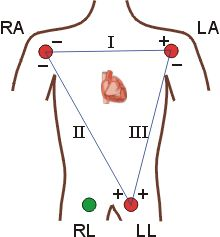
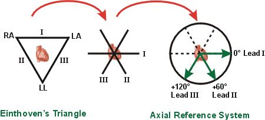
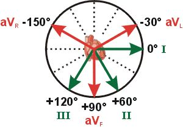
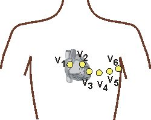

|
Richard E. Klabunde, Ph.D. |
|
Electrocardiogram
Leads
As the heart undergoes depolarization and
repolarization, the electrical currents spread throughout the body because
the body acts as a volume
conductor.The electrical currents
generated by the heart are commonly measured by an array of electrodes
placed on the body surface and the resulting tracing is called an electrocardiogram
(ECG, or EKG). (Electrical measurements can also be made within the
heart using special catheters; these are useful for specialized electrophysiological
diagnostic procedures). By convention, electrodes are placed on each
arm and leg, and six electrodes are placed at defined locations on the
chest.These electrode leads are
connected to a device that measures potential differences between selected
electrodes in order to produce the characteristic electrocardiographic
tracings.
There are two basic types of electrocardiogram (ECG) leads: bipolar and unipolar. Bipolar leads utilize a single positive and a single negative electrode between which electrical potentials are measured. Unipolar leads (augmented leads and chest leads) have a single positive recording electrode and utilize a combination of the other electrodes to serve as a composite negative electrode. Bipolar recording is represented by standard limb lead configurations depicted at the right. By convention, Lead I has the positive electrode on the left arm, and the negative electrode on the right arm, and therefore measures the potential difference between the two arms. In this and the other two limb leads, an electrode on the right leg serves as a reference electrode for recording purposes. In the Lead II configuration, the positive electrode is on the left leg and the negative electrode is on the right arm. Lead III has the positive electrode on the left leg and the negative electrode on the left arm. These three bipolar limb leads roughly form an equilateral triangle (with the heart at the center) that is called Einthoven's triangle in honor of Willem Einthoven who developed the electrocardiogram in 1901. Whether the limb leads are attached to the end of the limb (wrists and ankles) or at the origin of the limb (shoulder or upper thigh) makes no difference in the recording because the limb can simply be viewed as a long wire conductor originating from a point on the trunk of the body. Based upon universally accepted ECG rules, a wave a depolarization heading towards the left arm will give a positive deflection in Lead I because the positive electrode is on the left arm. Maximal positive ECG deflection will occur in Lead I when a wave of depolarization travels parallel to the axis between the right and left arms. If a wave of depolarization heads away from the left arm, the deflection will be negative. Also by these rules, a wave of repolarization moving away from the left arm will be seen as a positive deflection. Similar statements can be made for Leads II and III where the positive electrode is located on the left leg. For example, a wave of depolarization traveling towards the left leg will give a positive deflection in both Leads II and III because the positive electrode for both leads is on the left leg. A maximal positive deflection will be obtained in Lead II when the depolarization wave travels parallel to the axis between the right arm and left leg. Similarly, a maximal positive deflection will be obtained in Lead II when the depolarization wave travels parallel to the axis between the left arm and left leg. If the three limbs of Einthoven's triangle (assumed to be equilateral) are broken apart, collapsed, and superimposed over the heart, then the positive electrode for Lead I is said to be at zero degrees relative to the heart (along the horizontal axis) (see figure at right). Similarly, the positive electrode for Lead II will be +60º relative to the heart, and the positive electrode for Lead III will be +120º relative to the heart as shown to the right. This new construction of the electrical axis is called the axial reference system. With this system, a wave of depolarization traveling at +60º will produce the greatest positive deflection in Lead II. A wave of depolarization oriented +90º relative to the heart will produce equally positive deflections in both Lead II and III. In this latter case, Lead I will show no net deflection because the wave of depolarization is heading perpendicular to the 0º, or Lead I, axis (see ECG rules). Augmented Limb Leads (Unipolar) In addition to the three bipolar limb leads described above, there are three augmented unipolar limb leads. These are termed unipolar leads because there is a single positive electrode that is referenced against a combination of the other limb electrodes. The positive electrodes for these augmented leads are located on the left arm (aVL), the right arm (aVR), and the left leg (aVF). In practice, these are the same electrodes used for Leads I, II and III. (The ECG machine does the actual switching and rearranging of the electrode designations). The three augmented leads are depicted using the axial reference system as shown to the right. The aVL lead is at -30º relative to the Lead I axis; aVR is at -150º and aVF is at +90º. It is very important to learn which lead is associated with each axis. The three augmented unipolar leads, coupled with the three bipolar leads, constitute the six limb leads of the ECG. These leads record electrical activity along a single plane, termed the frontal plane relative to the heart. Using the axial reference system and these six leads, it is rather simple to define the direction of an electrical vector at any given instant in time. If a wave of depolarization is spreading from right-to-left along the 0º axis, then Lead I will show the greatest positive amplitude. Likewise, if the direction of the electrical vector for depolarization is directed downwards (+90º), then aVF will show the greatest positive deflection. If a wave of depolarization is moving from left-to-right at +150º, then aVL will show the greatest negative deflection according to the rules for ECG interpretation. The last ECG leads to consider are the precordial, unipolar chest leads. These are six positive electrodes placed on the surface of the chest over the heart in order to record electrical activity in a plane perpendicular to the frontal plane (see figure at right). These six leads are named V1 - V6. The rules of interpretation are the same as for the limb leads. For example, a wave of depolarization traveling towards a particular electrode on the chest surface will elicit a positive deflection. In summary, the twelve ECG leads provide different
views of the same electrical activity within the heart. Therefore,
the waveform recorded will be different for each lead. To understand
how cardiac electrical currents actually generate and ECG tracing and why
the different leads display that electrical activity differently, it is
necessary to understand volume
conductor principles and vectors.
|
|
Last Revised: 02/07/2001 |